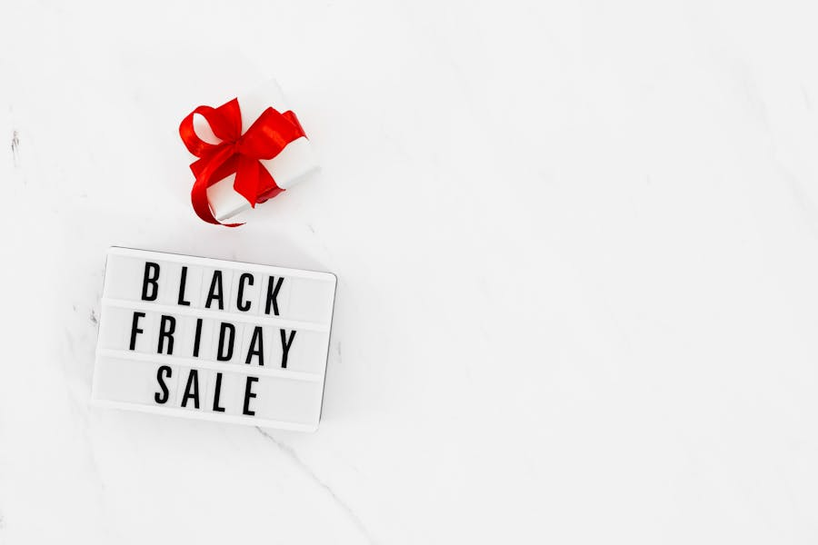

Disclosure
This article contains referral links. If you sign up through our links, we may earn a small commission at no extra cost to you. This supports the site. See our full disclaimer.
Cashback apps do not generate money from thin air. They exist because retailers pay referral commissions to platforms that drive purchases, and those platforms pass a portion of that commission back to you. The mechanism is legitimate, the money is real, and the amounts are small. A regular online shopper using one or two cashback portals consistently can realistically recover $100 to $300 per year — not transformational, but not nothing either.
The problem is the noise. There are dozens of cashback platforms claiming to be the best, each with a signup bonus designed to pull you in. We have used these tools across real purchases — household goods, electronics, travel bookings, clothing — and the results are predictable enough to report honestly. This article focuses on two platforms we recommend: BeFrugal for its rate guarantee and zero-minimum payouts, and Swagbucks for users who also do surveys and GPT tasks and want one platform to consolidate both. We also cover how to stack them.
Quick Comparison
| Platform | Cashback Rate Range | Store Count | Payout Minimum | Payment Methods | Signup Bonus |
|---|---|---|---|---|---|
| BeFrugal | 1%–40% (avg. 2–6%) | 5,000+ | $0.01 (PayPal/Venmo/Zelle), $25 (check) | PayPal, Venmo, Zelle, direct deposit, check, gift cards | Varies (typically $10 after first cashback) |
| Swagbucks | 1%–20% (avg. 2–5%) | 1,500+ | $3 (gift cards), ~$25 (PayPal via SB points) | PayPal, gift cards (Amazon, Target, etc.) | Signup bonus (varies by promo) |
BeFrugal
BeFrugal is the platform we use most consistently, and the reason is straightforward: the rate guarantee. If you find a higher cashback rate for the same store on any competing portal, BeFrugal will match it and add an extra 25%. That is not marketing language — it is a documented policy. In practice it means that even if BeFrugal's listed rate at a given retailer is lower than a competitor's, you can claim the better rate. We have used this successfully with several retailers where Rakuten or TopCashback briefly posted a higher percentage during a promotion.
The payout structure is the other major advantage. Most competing platforms impose minimums of $10 to $25 before you can withdraw. BeFrugal's minimum for PayPal, Venmo, Zelle, and direct deposit is $0.01. There is effectively no minimum. Checks require $25, which is a reasonable constraint for a physical payment, but digital withdrawals are available as soon as any amount clears.
Cashback tracking typically takes 15 to 90 days after purchase before earnings become available for withdrawal. This lag is standard across the industry — it accounts for return windows and transaction verification. The platform covers over 5,000 stores, including Amazon, Walmart, Target, Nike, Macy's, and most major travel booking sites. Rates range from 1% at some big-box retailers to 20% or higher at smaller specialty retailers, with an average of around 2% to 6% for everyday purchases.
The main complaints users raise are: transaction non-tracking (where a cashback click does not register, requiring a claim), accounts being deactivated after a long period of inactivity, and cashback sitting in verified status for extended periods. None of these are unique to BeFrugal — they are industry-wide issues — but they are worth knowing about before you make a large purchase expecting the cashback to post cleanly.
Pros
- Best-rate guarantee: match plus 25% if you find a higher rate elsewhere
- No effective payout minimum for digital withdrawals ($0.01)
- 5,000+ stores — the widest coverage in the category
- Multiple payout methods including Zelle and Venmo
- Browser extension auto-applies cashback without manual portal visits
- No quarterly payout schedule — withdraw whenever you reach the minimum
Cons
- Transaction non-tracking happens and requires a manual claim process
- 15–90 day lag before cashback is available to withdraw
- Check payout minimum of $25 is higher than competing methods
- Reports of account deactivation after extended inactivity
- UI is functional but not particularly modern

Swagbucks
Swagbucks is the largest GPT platform in the English-speaking market and has been operating since 2008. Most people associate it with surveys and video watching, but its shopping portal functions as a full cashback platform and is the most relevant feature for users who primarily want to recover money on purchases.
The shopping portal covers over 1,500 stores and pays 1% to 20% cashback in SB points, where 100 SB equals roughly $0.10 (so 1,000 SB = $1.00). This point conversion creates friction when comparing rates with direct-cash platforms. If Swagbucks lists "3% cashback" on a purchase, you receive 3% of your spend in SB points, which you then redeem for PayPal cash or gift cards. The effective cash-out value is typically 1 SB = $0.01, making the math straightforward, but the multi-step redemption adds a layer of complexity that some users find annoying.
The advantage of Swagbucks is consolidation. If you are already using the platform for surveys, video watching, or daily bonus activities, the shopping portal adds cashback to existing behavior without adding friction. The signup bonus — which varies by promotion but has historically been a free SB credit on first use — gives new users an immediate taste of the point system.
Where Swagbucks falls short compared to BeFrugal: fewer stores (1,500 vs. 5,000+), lower typical cashback rates, a more complicated redemption path, and a $3 gift card minimum that sounds low but requires careful tracking through the point system. For pure cashback on shopping, BeFrugal beats Swagbucks on almost every metric. Swagbucks wins when you want a single platform that covers cashback, surveys, and other earning activities.
Pros
- One platform for cashback, surveys, videos, and GPT tasks
- Broad gift card redemption catalog — Amazon, Target, Walmart, and more
- Signup bonus gives immediate value
- Well-established brand with a documented payment history since 2008
- Seasonal promotions occasionally push rates to 10%+ at major retailers
Cons
- Fewer partner stores than BeFrugal (1,500 vs. 5,000+)
- Cashback paid in SB points — extra step to convert to cash
- Lower baseline cashback rates than dedicated portals
- PayPal redemption requires accumulating a larger SB balance ($25 minimum)
- Survey disqualification rates are high, reducing the GPT earning appeal
How to Stack Cashback (The Part Most People Skip)
Cashback stacking is the practice of combining multiple cashback-earning methods on a single purchase. Each layer is independent of the others and they do not cancel out. A typical stack might look like this:
- Cashback portal — Start at BeFrugal (or Swagbucks) and click through to the retailer. You earn the portal's cashback rate on the purchase total.
- Cashback credit card — Pay with a card that earns 1.5% to 5% cashback. This stacks directly on top of the portal cashback. A 2% cashback card plus a 4% BeFrugal rate equals 6% back on a purchase.
- Store coupon or promo code — Apply any available coupon before completing the purchase. Most portals still pay cashback on the post-coupon total.
- Retailer loyalty points — If the store has a loyalty program (Target Circle, Walmart+, etc.), those points accumulate separately and do not affect portal cashback eligibility.
On a $200 purchase with a 4% BeFrugal rate, a 2% cashback card, and a 10% coupon applied, the math runs roughly like this: $180 post-coupon purchase, $7.20 back from BeFrugal (4%), $3.60 back from the card (2%), total recovery of $10.80 plus whatever loyalty points accrue. That is 5.4% effective recovery — not dramatic, but compounded across a year of routine shopping, it adds up.
The critical rule: always start at the cashback portal and click through to the retailer from there. Opening the retailer's site directly — even if you later open the portal in another tab — may cause the tracking cookie to fail and the cashback to not register.
Common Cashback Mistakes
- Navigating directly to the retailer. The portal click must happen immediately before the purchase. Any navigation away from the portal's outbound link to the retailer can break tracking.
- Using browser privacy modes or ad blockers. Both can interfere with the tracking cookies that cashback portals rely on. Disable them for the portal click and the purchase session.
- Expecting fast cashback on big purchases. The 15–90 day tracking lag is non-negotiable. Do not count on a large purchase posting quickly.
- Ignoring the rate on a given day. Cashback rates at major portals change constantly. A retailer offering 3% today might be at 1% next week or 8% during a special promotion. Check before you buy rather than assuming the rate you saw last month applies.
- Stacking portals on the same purchase. You cannot earn cashback from two portals on a single purchase. Pick the one with the highest rate and use only that portal's link. Stacking a portal with a cashback card and coupons is fine; stacking two portals is not.
Reality Check
Cashback apps do not change whether you should make a purchase. The temptation is to buy something you would not otherwise buy because there is a 10% cashback offer active. That is a net loss — you spent $90 to "save" $10 on something you did not need.
These tools work as a recovery mechanism on purchases you were already going to make. Used that way, a diligent user spending $1,000 per month on routine purchases (groceries, household goods, clothing, travel) at an average 3% return recovers about $30 per month or $360 per year.
That figure is real but it requires consistent behavior, remembering to use the portal on every eligible purchase, and the patience to wait out the tracking window. Most people earn less than $360 per year because they forget half the time.
Final Verdict
For pure cashback on online shopping, BeFrugal is the better tool. The rate guarantee, near-zero payout minimum, and 5,000+ store coverage make it the first portal to check before any online purchase. Install the browser extension so you do not have to remember to visit the site — it surfaces cashback rates automatically when you land on a supported retailer.
Swagbucks is worth signing up for if you want a single platform that handles both cashback and other earning activities (surveys, videos, daily bonuses). Do not use Swagbucks as your primary cashback tool if BeFrugal's rates are higher for the store you are buying from, which they often are.
Stack both with a cashback credit card and coupon codes on every eligible purchase. The combined recovery across a year of normal shopping is the most realistic way to extract consistent value from these tools without changing your spending behavior.
Related Reading
- Best Micro-Task Sites That Pay in 2026
- Freecash vs Swagbucks vs PrizeRebel: Head-to-Head Comparison
- Top 5 Earn Apps to Make Money in 2026
- Bandwidth Sharing Apps Compared
What is your current cashback stack? If you have found a combination that consistently clears 5% or more on everyday purchases, the comments are open.